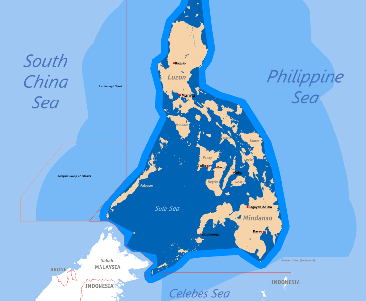

Occupation is a primary method through which a state can gain territorial sovereignty. This involves a state taking control of territory that is not under the sovereignty of another state. For a territory to be occupied, it must be considered 'Res nullius' (belonging to no one), indicating that it is either uninhabited, inhabited by uncivilized people, or by a tribal organization that does not constitute a state.
Annexation involves the forcible acquisition sof territory by one state at the expense of another. This can occur in two scenarios:
When the territory is conquered or subjugated by the annexing state.
When the territory is already subordinate to the annexing state at the time the intention to annex is declared.
Accretion is the process by which a state gains new land within its existing borders, such as when the sea recedes, a river changes course, or an island forms within territorial waters. These changes typically result in minor territorial expansions and rarely cause disputes. Accretion is defined as the increase of land through natural processes.
An illustrative case is the Anna, where a new island emerged, and the United States claimed jurisdiction over a Spanish vessel captured by a British privateer, asserting that it was within the American maritime belt. This claim was upheld based on the new land formation.
Prescription refers to acquiring territory through prolonged, continuous possession, especially when no original legal claim exists, or the original possession was unlawful but unchallenged over time. For example, the 1987 treaty between Great Britain and Venezuela prescribed a fifty-year period for title acquisition by prescription, though this practice is not universally followed.
Cession occurs when one sovereign state transfers territory to another through an agreement, typically formalized by a treaty. Notable examples include Russia's sale of Alaska to the USA in 1897 and the compulsory cession of Alsace-Lorraine from France to Germany in 1871, which was later returned to France after World War I.
Cession occurs when one sovereign state transfers territory to another through an agreement, typically formalized by a treaty. Notable examples include Russia's sale of Alaska to the USA in 1897 and the compulsory cession of Alsace-Lorraine from France to Germany in 1871, which was later returned to France after World War I.
Territorial acquisition can also result from a conference following a war, where victorious powers allocate territory as part of a peace settlement. The Versailles Peace Conference in 1919, which redistributed European territories, serves as an example.
A state can pledge part of its territory as security for a loan. History records numerous instances where states have used their territories as collateral for financial purposes.
Newly independent states acquire territorial sovereignty upon gaining independence. Examples include Bangladesh's independence in 1971 and the division of Yugoslavia into multiple countries.
A plebiscite is a direct vote by the people to express their will on significant issues, such as changes in government or constitution. The reunification of East and West Germany was achieved through this method.
The Philippines was originally formed as an entity on paper by Spain in the 16th century, though neither Spain nor the United States had full physical control of the archipelago until the 20th century.
In 1898, the United States formally acquired the Philippines from Spain through the Treaty of Paris, following the Spanish-American War. This gave the U.S. control over the Philippine archipelago.
However, the Philippines also had claims to additional territories beyond the main Philippine archipelago. Specifically:
- The Philippines claimed sovereignty over the Spratly Islands in the South China Sea, based on a 1734 map showing the islands as part of the Spanish East Indies. This is considered the "oldest documentary evidence of sovereignty" over the Spratlys.
- The Philippines also claimed the eastern part of North Borneo (now part of Malaysia), which was acquired by the Sultanate of Sulu between 1658-1700 and later came under British control.
In summary, the core Philippine territory was formally acquired from Spain by the United States in 1898, but the Philippines also had historical claims to other territories in the region that were not fully settled. The status of these additional claimed territories remains a point of contention.
The national territory of the Philippines is defined by its geographical context as an archipelago of 7,107 islands located in the western Pacific Ocean, strategically positioned off the southeastern coast of the Asian mainland, between China, Taiwan, Borneo, and Indonesia. Unlike its Southeast Asian counterparts, the Philippines is entirely surrounded by the sea, devoid of land boundaries with neighboring countries. Spanning approximately 300,055 square kilometers, with dimensions of 1,850 kilometers from north to south and 1,100 kilometers from east to west, it lies within the coordinates of 116° 40’ to 126° 34’ E longitude and 4° 40’ to 21° 10’ N latitude.
Bordered by the Philippine Sea to the east, the South China Sea to the west, and the Celebes Sea to the south, its territorial domain is characterized by a vast rectangle, delineated by the Philippine Treaty Limits, established through historical treaties dating back to the late 19th and early 20th centuries. The Philippines asserts its territorial sovereignty over these waters, defined by colonial treaties, as integral parts of its internal waters, a position enshrined in its Constitution and reflected in domestic legislation, which presents challenges in aligning with international maritime laws, such as the United Nations Convention on the Law of the Sea (LOSC).
The terrestrial domain of the Philippines encompasses its landmass and geographical features, situated in the western Pacific Ocean as an archipelago of 7,107 islands. Unlike its Southeast Asian neighbors, the Philippines shares no land boundaries, being entirely surrounded by the sea. With a total land area of approximately 300,055 square kilometers, it stretches for 1,850 kilometers from north to south and spans 1,100 kilometers from east to west. Positioned between 116° 40’ and 126° 34’ E longitude, and 4° 40’ and 21° 10’ N latitude, the country is bordered on the east by the Philippine Sea, on the west by the South China Sea, and on the south by the Celebes Sea. The geographical configuration, as defined in the Treaty of Paris, depicts the Philippine archipelago as a vast rectangle, measuring around 600 miles in width and over 1,200 miles in length.
The terrestrial domain of the Philippines encompasses its landmass and geographical features, situated in the western Pacific Ocean as an archipelago of 7,107 islands. Unlike its Southeast Asian neighbors, the Philippines shares no land boundaries, being entirely surrounded by the sea. With a total land area of approximately 300,055 square kilometers, it stretches for 1,850 kilometers from north to south and spans 1,100 kilometers from east to west. Positioned between 116° 40’ and 126° 34’ E longitude, and 4° 40’ and 21° 10’ N latitude, the country is bordered on the east by the Philippine Sea, on the west by the South China Sea, and on the south by the Celebes Sea. The geographical configuration, as defined in the Treaty of Paris, depicts the Philippine archipelago as a vast rectangle, measuring around 600 miles in width and over 1,200 miles in length.
The Internal Waters of the Philippines refer to the: 10 (a) waters on the landward side of the archipelagic baselines not forming part of 11 Archipelagic Waters under Section 4 hereof and delimited in accordance with Article 12 50 of the 1982 United Nations Convention on the Law of the Sea (UNCLOS); and/or 13 (b) waters on the landward side of the baseline of the territorial sea of territories outside 14 of the archipelagic baselines.
The Constitution of the Philippines describes the national territory as comprising all the territory ceded to the United States by the Treaty of Paris concluded between the United States and Spain on December 10, 1898, the limits of which are set forth in Article III of said treaty together with all the islands embraced in the treaty concluded at Washington, between the United States and Spain on November 7, 1900, and in the treaty concluded between the United States and Great Britain on January 2, 1930, and all the territory over which the Government of the Philippine Islands exercised jurisdiction at the time of the adoption of the Constitution.
Whereas, all the waters within the limits set forth in the above-mentioned treaties have always been regarded as part of the territory of the Philippine Islands;
Whereas, all the waters around, between and connecting the various islands of the Philippine archipelago, irrespective of their width or dimension, have always been considered as necessary appurtenances of the land territory, forming part of the island or internal waters of the Philippines;
Whereas, all waters beyond the outermost islands of the archipelago but within the limits of the boundaries set forth in the aforementioned treaties comprise the territorial sea of the Philippines;
Whereas, the baselines from which the territorial sea of the Philippines is determined consist of straight lines joining appropriate points of the outermost islands of the archipelago; and Whereas, the said baselines should be clarified and specifically defined and described for the information of all concerned.
The Contiguous Zone of the Philippines refers to the waters 14 beyond and adjacent to the territorial sea and up to the extent of twenty-four (24) nautical miles 15 from the baselines or from the low-water line, as the case may be.
The Exclusive Economic Zone (EEZ) of the 20 Philippines refers to the waters beyond and adjacent to its territorial sea and up to the extent of 21 two-hundred (200) nautical miles from the baselines or from the low-water line, as the case may be.
The High Seas Treaty was approved by the UN General Assembly last June 19, 2023. It has been signed by over 85 states, including China and the Philippines, and is now open for ratification. The High Seas Treaty is intended to conserve marine biodiversity, and ensure sustainable use of the natural resources, in the High Seas and the seabed beyond national jurisdiction.
Under the UN Convention on the Law of the Sea or UNCLOS, the High Seas start seaward from the outer limit of the exclusive economic zone. The water column in the High Seas, and the living resources found in such water column, belong to the common heritage of mankind. The non-living resources in the seabed of the High Seas beyond national jurisdiction, occupying what is called in UNCLOS as the AREA, also belong to the common heritage of mankind.
About 25% of the South China Sea are High Seas, which means the High Seas Treaty unquestionably applies to the South China Sea. However, under China’s 10-dash line, the High Seas and the seabed of the High Seas beyond national jurisdiction are baselessly claimed by China as its national territory. In short, China denies that there are High Seas in the South China despite compelling physical and legal evidence to the contrary. China’s 10-dash line encloses about 85.7% of the South China Sea.
The second sentence of Article I is an affirmation of the archipelagic doctrine. By this doctrine it means that a group of islands shall be considered as a national unit. The waters around, between and connecting every island on the group regardless of their breadth and dimensions will be treated as part of the internal waters. The doctrine implies full domination and sovereign rights over the waters among the islands, which comprise the Philippine Archipelago. With the application of the Archipelago Doctrine, the identity of the Republic of the Philippines as one state is preserved and the Filipino nation looked upon as a unit and not a splintered into 7,104 islands (Martin, 1960)
The second sentence of Article I is an affirmation of the archipelagic doctrine. By this doctrine it means that a group of islands shall be considered as a national unit. The waters around, between and connecting every island on the group regardless of their breadth and dimensions will be treated as part of the internal waters. The doctrine implies full domination and sovereign rights over the waters among the islands, which comprise the Philippine Archipelago. With the application of the Archipelago Doctrine, the identity of the Republic of the Philippines as one state is preserved and the Filipino nation looked upon as a unit and not a splintered into 7,104 islands (Martin, 1960)